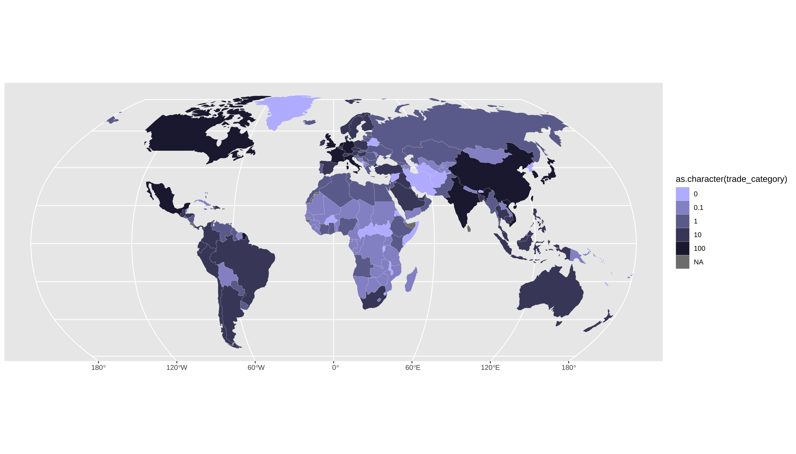
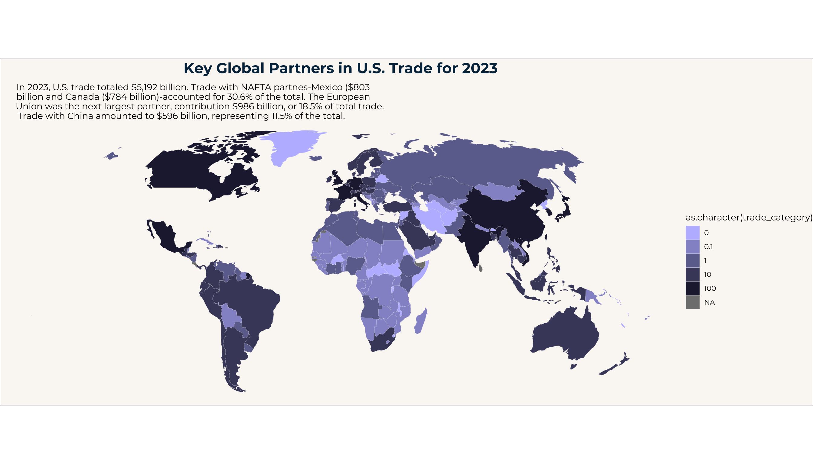
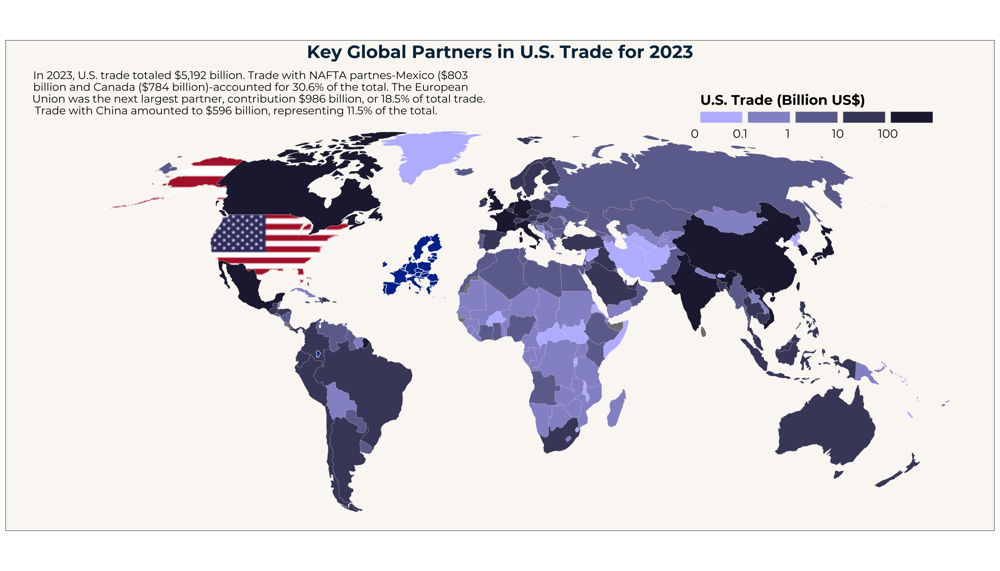

Introduction
The U.S. totaled over $5.1 trillion in trade for the year 2023. This is a truly staggering amount and it poses the interesting question, which the major trade partners are. By looking at trade through this visualization we can also see how our wold today is globalized and connected, even in times of rising global tensions.
The original visualization can be found following [this link]https://www.voronoiapp.com/economy/-Top-Global-Trading-Partners-of-the-US-in-2023-2172).

The Visualization
The Data
Getting the data and downloading the packages
First we are going to start by loading the packages. For the Flagon package we have take a little detour, since it is not available through the regular R function. Therefore, we will download and load it at a later step.
Luckily the data for this visualization was available and only had to be downloaded and then transformed to be imported into R. The original data source is cited as comtrade, U.S. Census and WTO
trade_data <- read_excel(paste("/Users/jasonbrunner/Documents/HSG/",
"HS24 inkl. Austausch/HS24 UC3M/Data Visualization/",
"Final Project/Data Final Project.xlsx", sep = ""),
col_types = c("text","numeric"))The dataset is already tidy data and is ready to modified for our visualization. The raw trade data which we have imported before now has to be modified to fit the trade categories displayed in our visualization and later it will be merged with our main world dataset.
You might wonder, why they are split in these specific categories. The reason is, that to then later on create the legend we can’t use a straight forward approach and will need to become a bit creative. More about this will follow once we reach the legend.
The map
Creating the basic plot
The next step will be to focus on the actual world map. For this we take advantage of the rnaturarearth package which provides us with a comprehensive dataset about the world. We will also need to perform a few modifications to better fit the original plot. As you will also notice, we filter the United States out of the dataset. This is because the United States are filled with the US Flag and therefore we need to exclude it momentarily from our base dataset to be able to do this modification later. As mentioned earlier we will now in the same step merge our trade data with the world data we have created so we get our base dataset to then start with our plot. Lastly we also define the colours used in the visualization. They have been obtained by using an online tool to get the colour codes from any colour you provide it.
Additionally we also need to download the font. Using an online tool we were able to determine the font as “montserrat”. Luckily it is also available as a free download and we can use it for our visualization.
world <- ne_countries()
excluded_countries <- c("French Southern and Antarctic Lands","Antarctica",
"Falkland Islands / Malvinas")
#removing the excluded countries and the United States
world <- world %>%
filter(!name_long %in% excluded_countries) %>%
filter(!name_long %in% "United States")
#incorporate the trade data into to world dataset
world <- left_join(world, trade_data, by = c("name_long" = "Country"))
#defining the colours used for the map
colors <- c("#bdbcfe", "#9494cd", "#6d6f9c", "#49476a", "#21213c")
font_add_google("Montserrat", "montserrat")
showtext_auto()Now we have everything ready to actually create the first draft of our visualization. There is still a long way to go but we can plot the first draft with the help of the ggplot2 package to see the map with the exclusions and the colours for the trade data.
X <- ggplot(data = world) +
geom_sf(aes(fill = as.character(trade_category)),
color = "#faf8f4",
linewidth = 0.05) +
coord_sf(crs = "+proj=robin") +
scale_fill_manual(values = colors)
X
After having created our first plot we will continue enhancing it and getting it closer to the original one. The first things that comes to mind apart from the legend are the gridlines present in the plot and the background. We can fix these two problems easily by adding the following lines of code to our ggplot. In the same step we will also go ahead and add the title and subtitle to our plot. To make the title and subtitle look right, we also adjust the font corresponding to the original visualization. By defining this in our theme, it will automatically be adjusted for all text elements.
X <- X + theme_void() +
labs(title = "Key Global Partners in U.S. Trade for 2023",
subtitle = paste("In 2023, U.S. trade totaled $5,192 billion. ",
"Trade with NAFTA partnes-Mexico ($803\nbillion ",
"and Canada ($784 billion)-accounted for 30.6% of the ",
"total. The European\nUnion was the next largest ",
"partner, contribution $986 billion, or 18.5% of total",
" trade.\nTrade with China amounted to $596 billion, ",
"representing 11.5% of the total.", sep = "")) +
#now the theme is being modified to replicate the title and subtitle from the
#original plot and in the same step we also adjust the background
theme(plot.title = element_text(hjust = 0.5,
size = 18,
face = "bold",
colour = "#042f4a"),
plot.background = element_rect(fill = "#faf8f4"),
plot.subtitle = element_text(hjust = 0.05),
text = element_text(family = "montserrat"))
X
Now it already looks much more familiar. Let’s not focus on the details like positioning and font size yet, but we will look at the more important things like the legend. First of all we need to turn the legend and make it horizontal and position it somewhat in the top right corner. We also need to fix the labels and get rid of the NA category.
In order to get the labels of the scale to their correct position, there were some tricks needed. By default the labels would be centered under each category and by moving them to the left or right they wouldn’t center, since they all have a different length.
X <- X + theme(legend.direction = "horizontal",
legend.position = c(0.85, 0.99),
legend.title = element_text(size = 14,
face = "bold",
color = "#030001"),
legend.text = element_text(size = 12,
color = "#030001"),
legend.margin = margin(t = 0, r = 0, b = 0, l = 0),
panel.margin = margin(t = 500, r = 50, b = 50, l = 50)) +
scale_fill_manual(values = colors, name = "U.S. Trade (Billion US$)",
breaks = c("0", "0.1", "1", "10", "100", "1000"),
labels = c(" 0 ",
"0.1 ",
" 1 ",
" 10 ",
"100 ",
"1000 ")) +
guides(fill = guide_legend(
title.position = "top",
title.hjust = 0.5,
label.position = "bottom",
label.hjust = -1,
label.vjust = 0.5,
keywidth = unit(1.5, "cm"),
keyheight = unit(0.2, "cm")))
XThe flag
After creating the basic map, we can start adding the details. Most notably, the flag is still missing. For this we are going to use the flagon package to get the image of the flag and the spData package for the isolated US mainland and Alaska multipolygon. The flagon package is not available to be downloaded through the regular R function, therefore we must take a slightly different approach and download it directly from github.
usa <- spData::us_states |> sf::st_union()
alaska <- spData::alaska
install_github("coolbutuseless/flagon")
library(flagon)
flag <- flags("US", filetype = "png")
X1 <- X +
geom_sf_pattern(data = usa,
pattern = 'image',
pattern_filename = flag,
pattern_type = "expand",
color = NA) +
geom_sf_pattern(data = alaska,
pattern = 'image',
pattern_filename = flag,
pattern_type = "none",
pattern_scale= 0.3,
pattern_gravity = "southwest",
color = NA)+
coord_sf(crs = "+proj=robin")The EU-27 subplot
Having fitted the flag we now continue by creating the EU-27 subplot. First we had to define a new vector with the EU-27 countries from the original plot. After this, the world dataset is filtered so only the EU-27 countries remain and we can create the new plot. After that we then only have to set the borders so we don’t get the islands in the atlantic.
EU_27 <- c("Austria", "Belgium", "Bulgaria", "Croatia", "Cyprus",
"Czech Republic", "Denmark", "Estonia", "Finland", "France",
"Germany", "Greece", "Hungary", "Ireland", "Italy", "Latvia",
"Lithuania", "Luxembourg", "Malta", "Netherlands", "Poland",
"Portugal", "Romania", "Slovakia", "Slovenia", "Spain", "Sweden")
world_EU <- world %>%
filter(name_long %in% EU_27)
EU <- ggplot(data = world_EU) +
geom_sf(fill = "#01339a",
color = "#faf8f4",
linewidth = 0.25) +
coord_sf(xlim = c(-20,40),
ylim = c(35,70)) +
coord_sf(crs = "+proj=longlat") +
theme_void()Adding them together
To finalize the map of our plot we add the EU-27 plot to the main plot. There is a package called ggpatchwork for this, which allows us to position it and scale it accordingly. This will now yield our final map which only needs the annotations to make it complete
M <- X1 + inset_element(EU, left = 0.13, bottom = 0.4, right = 0.63,
top = 0.725)
M
Annotations
To finalize our plot we now need to add all the annotations. This step is a bit tedious, since every annotation has to be added manually. Additionally to this, certain elements of the annotation have to be somewhat “constructed”, like the background of the numbers corresponding to the countries. To simplify the process of finding the correct font size and being able to adjust it across all annotations efficiently, the font size is defined by a variable. Since the annotations are hierarchical, we can layer shapes and texts on top of each other. This allowed the creation of the circles whit a number on top. There is also the instance of Germany and the Netherlands, where this feature has been taken advantage of. For these two annotations, the background has been filled with the color of the main background, so we can cover some small islands there. These were not able to being filtered out, since their geometrical information is stored in the variable with some of the mainland countries.
font_size <- 3
X2 <- X1 +
geom_point(x = -9700000, y = 2100000,
size = 6.5, stroke = 1, shape = 21,
color = "violet", fill = "black") +
annotate("text", x = -9700000, y = 2100000,
label = "1", color = "white") +
annotate("richtext", x = -9700000, y = 1400000,
label = "Mexico<br><b>$803B</b>",
size = font_size,
lineheight = 0.8,
fill = NA,
label.color = NA) +
geom_point(x = -8200000 , y = 5800000 + 700000,
size = 6.5, stroke = 1, shape = 21,
color = "violet", fill = "black") +
annotate("text", x = -8200000 , y = 5800000 + 700000,
label = "2", color = "white") +
annotate("richtext", x= -8200000, y = 5800000,
label = "Canada<br><b>$784B</b>",
size = font_size,
lineheight = 0.8,
fill = NA,
label.color = NA,
color = "white") +
geom_point(x = 9100000 -800000, y = 3700000 + 180000,
size = 6.5, stroke = 1, shape = 21,
color = "violet", fill = "black") +
annotate("text", x = 9100000 - 800000, y = 3700000 + 180000,
label = "3", color = "white") +
annotate("richtext", x= 9100000, y = 3700000,
label = "China<br><b>$596B</b>",
size = font_size,
lineheight = 0.8,
fill = NA,
label.color = NA,
color = "white") +
annotate("richtext", x= 1680000, y = 7800000,
label = "Germany<br><b>$240B</b>",
size = font_size,
lineheight = 0.8,
fill = "#faf8f4",
label.color = NA) +
geom_point(x = 1680000, y = 7800000 + 700000,
size = 6.5, stroke = 1, shape = 21,
color = "violet", fill = "black") +
annotate("text", x = 1680000, y = 7800000 + 700000,
label = "4", color = "white") +
geom_point(x = 13000000, y = 3900000 + 700000,
size = 6.5, stroke = 1, shape = 21,
color = "violet", fill = "black") +
annotate("text", x = 13000000, y = 3900000 + 700000,
label = "5", color = "white") +
annotate("richtext", x= 13000000, y = 3900000,
label = "Japan<br><b>$228B</b>",
size = font_size,
lineheight = 0.8,
fill = NA,
label.color = NA) +
geom_point(x = 12600000 -1000000, y = 3000000 + 180000,
size = 6.5, stroke = 1, shape = 21,
color = "violet", fill = "black") +
annotate("text", x = 12600000 -1000000, y = 3000000 + 180000,
label = "6", color = "white") +
annotate("richtext", x= 12600000, y = 3000000,
label = "S.Korea<br><b>$185B</b>",
size = font_size,
lineheight = 0.8,
fill = NA,
label.color = NA) +
annotate("richtext", x= 70000, y = 7800000,
label = "Netherlands<br><b>$122B</b>",
size = font_size,
lineheight = 0.8,
fill = "#faf8f4",
label.color = NA) +
geom_point(x = -300000 -370000, y = 6550000 + 600000,
size = 6.5, stroke = 1, shape = 21,
color = "violet", fill = "black") +
annotate("text", x = -300000 -370000, y = 6550000 + 600000,
label = "7", color = "white") +
annotate("richtext", x= -300000, y = 6550000,
label = "UK<br><b>$140B</b>",
size = font_size,
lineheight = 0.8,
fill = NA,
label.color = NA) +
geom_point(x = 12200000 -900000, y = 2350000 + 180000,
size = 6.5, stroke = 1, shape = 21,
color = "violet", fill = "black") +
annotate("text", x = 12200000 -900000, y = 2350000 + 180000,
label = "8", color = "white") +
annotate("richtext", x= 12200000, y = 2350000,
label = "Taiwan<br><b>$130B</b>",
size = font_size,
lineheight = 0.8,
fill = NA,
label.color = NA) +
geom_point(x = 10750000 , y = 1500000 + 700000,
size = 6.5, stroke = 1, shape = 21,
color = "violet", fill = "black") +
annotate("text", x = 10750000 , y = 1500000 + 700000,
label = "9", color = "white") +
annotate("richtext", x= 10750000, y = 1500000,
label = "Vietnam<br><b>$129B</b>",
size = font_size,
lineheight = 0.8,
fill = NA,
label.color = NA) +
geom_point(x = 7450000 -390000, y = 2400000 + 400000,
size = 6.5, stroke = 1, shape = 21,
color = "violet", fill = "black") +
annotate("text", x = 7450000 -390000, y = 2400000 + 400000,
label = "10", color = "white") +
annotate("richtext", x= 7450000, y = 2200000,
label = "India<br><b>$127B</b>",
size = font_size,
lineheight = 0.8,
fill = NA,
label.color = NA,
color = "white") +
annotate("richtext", x= 7300000, y = 6500000,
label = "Russia<br><b>$5.5B</b>",
size = font_size,
lineheight = 0.8,
fill = NA,
label.color = NA,
color = "white") +
annotate("richtext", x= -4000000, y = 4000000,
label = "EU-27<br><b>$960B</b>",
size = font_size,
lineheight = 0.8,
fill = NA,
label.color = NA) +
annotate("richtext", x= -4800000, y = -850000,
label = "Brazil<br><b>$86B</b>",
size = font_size,
lineheight = 0.8,
fill = NA,
label.color = NA,
color = "white") +
annotate("richtext", x= 3250000, y = -4000000,
label = "South Africa<br><b>$21B</b>",
size = font_size,
lineheight = 0.8,
fill = NA,
label.color = NA) +
annotate("richtext", x= 12500000, y = -2500000,
label = "Australia<br><b>$50B</b>",
size = font_size,
lineheight = 0.8,
fill = NA,
label.color = NA,
color = "white") +
annotate("richtext", x= -900000, y = 5000000,
label = "France<br><b>$104B</b>",
size = font_size,
lineheight = 0.8,
fill = NA,
label.color = NA) +
annotate("richtext", x= -1400000, y = 4250000,
label = "Spain<br><b>$49B</b>",
size = font_size,
lineheight = 0.8,
fill = NA,
label.color = NA) +
annotate("richtext", x= 1500000, y = 3500000,
label = "Italy<br><b>$104B</b>",
size = font_size,
lineheight = 0.8,
fill = NA,
label.color = NA)
X2
M <- X2 + inset_element(EU, left = 0.13, bottom = 0.4, right = 0.63,
top = 0.725)
M